투자 사례
투자 및 기술사업화 사례 _진병기 투자. 13개사의 원자료 내용을 그대로 싣습니다.
00
전체 목록
Index
- ㈜리벤처스대표 김나경 · 설립 2020-08-31
- ㈜메타뱅크대표 소요환 · 설립 2021. 12. 07
- ㈜더드림벤처스대표 진병기 · 설립 2025. 4. 9. 설립
- ㈜한푸드테크대표 김정연
- ㈜퓨처파워텍
- ㈜우리지에이대표 정상기 · 설립 2020년 11월 12일
- (주)블루커뮤니케이션대표 정희용 · 설립 2013-11-13
- (주)코코즈설립 2017-05-29
- ㈜케이디에스대표 김춘식 · 설립 2013.11.01
- 비젼넥스텝㈜대표 송주영 · 설립 2007.07.30
- ㈜정우티앤씨설립 2016년 10월 05일
- ㈜피케이설립 2022.03.08
- ㈜시정설립 ‘16. 10. 27
사업자 · 법인번호, 연락처, 주소, 재무 수치는 싣지 않습니다. 원자료 쪽 번호를 각 기업 아래에 적습니다.
01
㈜리벤처스
Case
㈜리벤처스_대표 김나경
기업 개요
- 기업체명
- (주)리벤처스
- 영문기업명
- REVENTURES
- 대표자명
- 김나경
- 종업원수
- 8명
- 설립형태
- 신규설립(개업)
- 설립일자
- 2020-08-31
- 기업형태
- 일반법인
- 기업규모
- 소상공인
- 홈페이지
- https://www. reventures.co.kr
- 업종(10차)
- (M71531)경영 컨설팅업, 엑셀러레이터
리벤처스는 매년 빠르게 성장하고 있는 액셀러레이터입니다.
리벤처스는 모태펀드 및 민간펀드를 지속 결성하고 있으며, 매년 20여개 이상 스타트업에 투자하고 있는 액셀러레이터입니다.
투자 실적
- 투자기업 수
- 48 개사
리벤처스는 TIPS 운영사입니다.
Reventures × TIPS KOREA (TECH INCUBATOR PROGRAM FOR STARTUP)
투자 FORTFOLIO
- Seed
(주)나두모델
Platform
광고모델 AI 플랫폼
- Pre -A
(주)또트
Mobility & Robot
EV 폐배터리 해체 및 진단 인공지능 로봇
- Seed
(주)노바스마트코리아
Chemistry & Materials
나노 하이브리드 UV 코팅 원료
- Pre-A
㈜이브이에스텍
Chemistry & Materials
이차전지 전해질, 에너지 절감 기능성 코팅제
- Series A
㈜라라스테이션
E-Commerce
라이브 방송 솔루션 및 콘텐츠 제작 전문
- Series A
㈜스마투스코리아
IoT
휴대용 구강 진단 솔루션 및 기기 제조
- Pre -A
(주)파이프트리스마트팜
IOT
데이터 기반 농가 생산관리 시스템
- Seed
(주)바인딩
Chemistry & Materials
창호형 투명 태양광 모듈
- Seed
(주)뮤아스
Platform
아동 방문 음악교육 서비스
- Pre-A
㈜디엠서플라이
E-Commerce
패드 기반 가방 개발 및 제조
- Series B
㈜제이디솔루션
IoT
초지향성 음향장치 개발 및 제조
- Seed
㈜PSF
Food-Tech
반려동물 기능성 식품 제조
- Series A
(주)이노레이
Industry HW
첨단 고안정성 레이저 제조 및 레이저 응용 검사 장비
- Series A
(주)마이노멀컴퍼니
E-Commerce
키토제닉 식품 브랜드 및 식단관리 앱
- Pre-A
㈜블루비커
ICT / SW
바이오 메디컬 연구자를 위한 3D 이미지 솔루션
- Seed
㈜GRMK
E-Commerce
수산물 전문 ERP
- Series A
㈜엔진비주얼웨이브
Contents
특수효과(VFX) 전문기업
- Series A
㈜차지인
Energy / Eco-Friendly
전기차 충전 인프라 전문기업
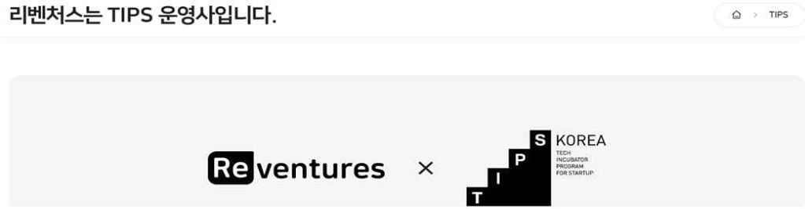
원자료 p.31
02
㈜메타뱅크
Case
㈜메타뱅크_대표 소요환
㈜메타뱅크의 기업비전
㈜메타뱅크의 기업비전은 “최상의 리얼리티 구현” “저비용 고품질 원스톱 서비스 실현” “양질의 데이터를 전 세계 함께 공유”
1. 일반현황
- 회사명
- ㈜메타뱅크
- 설립일자
- 2021. 12. 07
- 대표자명
- 소요환
- 임직원수
- 10명
3. 사업현황
Meta vision(windows/mac) 출시 및 판매, Meta scan APP 출시 및 서비스, Meta 360 출시 및 서비스, Meta pano 판매, Meta action 판매
4. 주요연혁
- 2024. 03. 대전정보문화산업진흥원 ICT 기업 전주기 지원사업 선정
- 2024. 02. 대한민국 산업대상 “대상” 수상(K-R&D 부문)
- 2024. 02. ISO 9001 인증 취득
- 2024. 01. 미국 라스베가스 2024 CES 참가
- 2023. 08. 충남대학교 창업지원단 2023년 지역기술창업육성 지원사업 선정
- 2023. 07. 2023 대덕특구 액셀러레이팅 지원사업 선정
- 2023. 07. 한남대학교 창업보육센터 2023년 공공기술 실용화 지원사업 선정
- 2023. 07. 대전정보문화산업진흥원 유니콘 프로토타입 제작 지원사업 선정
- 2023. 06. 한국인정기구(KOLAS) 기술 인증 (성적서 인증번호 : 23-20007) 공인시험 인증
- 2023. 04. 대덕연구개발특구 연구소기업 등록
- 2023. 03. 한남대학교 기술지주회사 자회사 편입
- 2022. 11. 한국정보통신기술협회(TTA) 기술 인증(성적서 인증번호 : TTA-22-0976) 공인시험 인증
- 2022. 09. 대전창조경제혁신센터 대전스타트업타운 디브릿지 지원사업 선정
- 2022. 09. 창업진흥원 실험실 특화 초기창업패키지사업 선정
- 2022. 07. 중소벤처기업부 창업성장기술개발사업 디딤돌(첫걸음) 선정
- 2022. 05. 중소벤처기업부 산학R&D 예비연구 선정
- 2022. 02. ㈜메타뱅크 기업부설연구소 설립
- 2021. 12. ㈜메타뱅크 법인 설립
제품 및 서비스
- 데이터 생성 S/W 및 HW
- 메타비전(meta vision) / 메타360(meta 360) / 메타아이(meta eye) / 메타캡쳐(meta capture)
- 데이터 공유 플랫폼
- 리얼메타(real meta 3D)
- 메타버스 콘텐츠
- 메타파노(meta pano)
- 인터랙션 콘텐츠
- 메타액션(meta action)
딥러닝과 포토그래메트리 기반 3D 모델 추출 소프트웨어 — meta vision 메타비전(meta vision)
메타비전(meta vision)은 인공지능 기술과 포토그래메트리 기술을 기반으로 카메라로 촬영된 다수의 사진 이미지를 활용하여 소프트웨어적으로 3D 모델링 데이터를 복원하고 결과의 정확도(정밀도)와 사용자 편의성을 향상시키기 위해 개발한 혁신적인 3D 모델 복원 소프트웨어입니다.
딥러닝 기반 360도 회전 인터랙션 제작 소프트웨어 및 솔루션 — meta 360 메타 360(meta 360)
메타 360(meta 360)은 온라인(가상/메타버스 환경) 쇼핑몰에 상품을 시각화 하기 위해 인공지능 기술을 기반으로 이미지들을 자동 배경 제거하고 GIF 애니메이션과 HTML 기반의 360도 회전 인터랙션을 쉽고 빠르게 제작할 수 있도록 지원하는 소프트웨어 및 솔루션입니다.
메타비전 기반 메타버스 콘텐츠 및 플랫폼 — meta pano 메타파노(meta pano)
메타파노(meta pano)는 메타비전 S/W를 활용하여 3D 데이터를 생성하고 생성한 모델링 데이터와 ㈜메타뱅크에서 자체 개발한 3D 웹 뷰어 및 전용 서버를 활용하여 전세계 사용자들이 메타버스 공간에 입장하여 쇼핑몰이나 박물관, 미술관, 사무 공간과 같은 다양한 실생활 콘텐츠 및 문화(교육) 체험 서비스를 재미있고 현장감 있게 즐길 수 있는 사실성이 뛰어난 새로운 개념의 메타버스 콘텐츠 및 플랫폼입니다.
카메라 및 라이다 센서 기반 인터랙션 콘텐츠 및 서비스 — meta action 메타액션(meta action)
메타액션(meta action)은 라이다 센서 기반의 동작인식 기술이나 카메라 기반의 영상인식 기술을 활용하여 사용자의 몸이나 손동작을 통해 창의적인 영상 등을 구현하는 인터랙션 콘텐츠입니다.
제품 패키지
- META vision: Deep Learning & Photogrammetry 3D Reconstruction software / One-stop solution
- META 360: 360 degree rotate photography interaction Software based on Deep Learning / One-stop solution
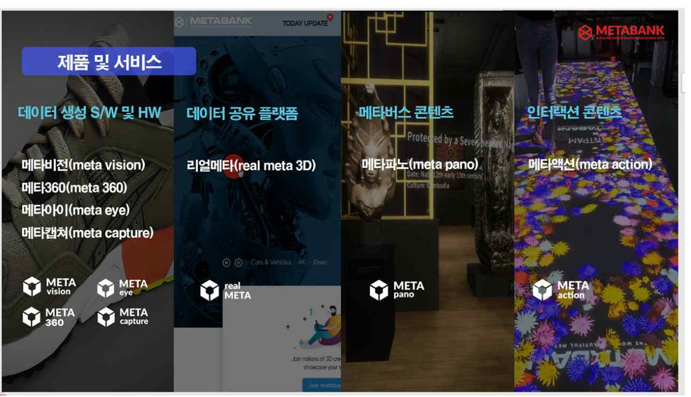
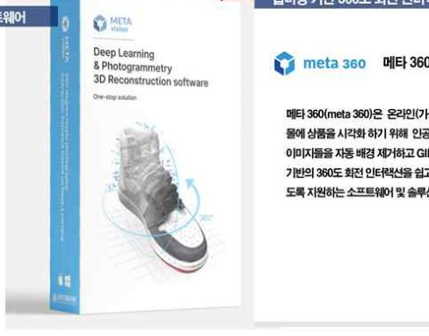
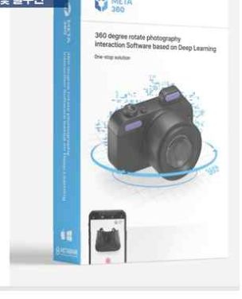
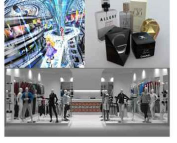
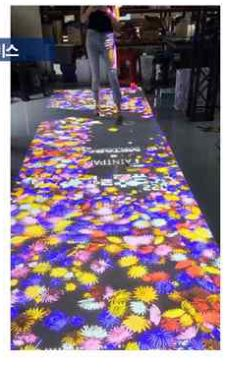
원자료 p.32
03
㈜더드림벤처스
Case
㈜더드림벤처스_대표 진병기
1. 창업기업 소개
주식회사 더드림벤처스 / AI로 연결하는 중소벤처기업 성장 생태계
VISION / MISSION
- VISION
- 대한민국을 대표하는 AI 기반 기업성장 플랫폼
- MISSION
- AI 에이전트 기반 통합지원으로 기업의 지속가능한 성장 실현
기업 개요
- 대표
- 진병기
- 설립
- 2025. 4. 9. 설립
- 임직원
- 6명
- 소재지
- 대전광역시 유성구
사업 영역(더드림벤처스 AI 기업성장 플랫폼)
- 1 통합지원 플랫폼 — 진단·매칭·사업화·수출·AI 상담
- 2 AX/DX 서비스 — 중소벤처기업 디지털 혁신
- 3 공동기술개발 — 기술기획·개발·실증
- 4 플랫폼·홈페이지 제작 — 기업 맞춤형 디지털 서비스
- 5 창업기획·보육·투자 — 성장단계별 사업화 지원
협력 네트워크
대전·세종 창조경제혁신센터 · 굿플랜 · 피플택스 · 피플인베스트 등
연혁
- 01 2025.04 창업
- 02 2025.10 투자유치
- 03 2025.12 벤처기업 지정
- 04 2026.07 특허 8건 출원
슬로건
기업진단 → 투자·협업 → 사업화 → 수출 / AI가 만드는 더 큰 내일, 중소벤처기업의 성장을 연결합니다.
기업지식그래프·과업그래프·멀티 AI 에이전트 기반 중소벤처기업 통합지원 플랫폼 개발
기업 데이터 통합 → 복합과업 분해 → 전문 에이전트 협업 → 신뢰 가능한 실행 산출물
전체 시스템 구성도
- 1 사용자·채널 계층 (다양한 사용자와 채널을 통한 접근 및 서비스 이용) — 사용자: 중소벤처기업, 소상공인, 투자사·금융기관, 전문가, 공공기관·지자체 / 채널: 웹, 모바일, 챗봇, 콜센터, 관리자 콘솔
- 2 AI 서비스·에이전트 계층 (과업 분해 및 14개 전문 에이전트 협업 실행) — Task Router / Orchestrator: 기업분석, 투자매칭, 협업매칭, 전문가매칭, 지원사업매칭, 사업계획서, 특허창출, 수출지원, 공공기술 추천, 기술이전, 계약지원, 입찰지원, AX/DX, 콜·챗상담 → 전문가 이관
- 3 데이터·지능 계층 (데이터 통합·지능화로 표준 기업 컨텍스트 생성) — 기업지식그래프, 벡터DB, RAG 검색, 추천모델, 설명가능 AI, 문서분석·OCR, STT/TTS, 데이터 품질관리
- 4 운영·보안·거버넌스 계층 (안전한 운영, 거버넌스, 컴플라이언스 및 신뢰 확보) — 보안 데이터룸, 권한관리, NDA, 감사로그, PII 마스킹, 전문가 이관, 피드백 학습
- 5 실행·산출물 계층 (실행 결과물 생성 및 사용자 활용) — 기업분석 리포트, IR·투자자료, 협업제안서, 전문가 상담, 지원사업 추천, 특허 초안, 수출자료, 기술이전 제안, 계약서 초안, 입찰 제안, AX/DX 로드맵
- 보안·정책 가드레일 — 접근통제 및 권한, 감사·추적 가능성, 전문가 이관(Human-in-the-Loop)
- 실행성과·사용자 피드백 → 지속학습·고도화
5대 핵심기술
| 1 기업 컨텍스트 생성 | 문서·음성·대화·외부 API 데이터를 정규화하고 품질점수·출처계보·접근권한 부여 | 산출물: 표준 기업 컨텍스트 |
|---|---|---|
| 2 과업 그래프·오케스트레이터 | 복합 요청을 과업 노드와 의존관계로 분해하고 에이전트 선택·실행·실패복구 | 산출물: Task Graph Engine |
| 3 도메인 AI 에이전트 | 기업진단부터 투자·협업·사업계획·특허·수출·계약·입찰·AX/DX·상담까지 전주기 지원 | 산출물: 14개 전문 에이전트 |
| 4 하이브리드 추천·RAG | 규칙필터·벡터검색·지식그래프·학습랭킹·근거패키지 결합 | 산출물: 설명가능 추천·근거패키지 |
| 5 가드레일·데이터룸·피드백 | 동적 신뢰도 임계값·전문가 이관·NDA 기반 보안·감사·실행성과 학습 | 산출물: 보안·이관·MLOps 페루프 |
플랫폼 요약
흩어진 기업정보를 하나의 기업 컨텍스트로 통합하고, 과업 그래프가 복합 요청을 분해하여 14개 전문 에이전트를 순차·병렬로 실행하는 신뢰 가능한 중소벤처기업 전주기 통합지원 플랫폼 / 안전·신뢰, 전문 협업, 성과 창출, 지속 고도화
멀티 AI 에이전트 통합지원 플랫폼
- 01 플랫폼 원천기술 — 통합지원 플랫폼의 핵심 아키텍처와 에이전트 오케스트레이션
- 02 데이터·매칭 기술 — 기업지식그래프와 데이터 품질·매칭·추천 기술로 가치 극대화
- 03 전문업무 AI — 계약·특허·상담 등 전문업무를 자동화·지능화
- 04 신뢰·보안·학습 — 보안 데이터룸과 전문가 이관, 신뢰 기반 학습으로 지속 고도화
- 8건의 연속 특허로 서비스 전주기를 보호하는 견고한 IP 무형자산 구축
특허 출원 8건
- 01 출원
기업지식그래프 기반 통합지원
플랫폼 원천기술
중소벤처기업·소상공인 통합지원 방법·시스템 / 10-2026-0124630
- 02 출원
멀티 AI 에이전트 오케스트레이션
플랫폼 원천기술
기업 컨텍스트·과업 그래프·근거패키지·전문가 이관 / 10-2026-0124631
- 03 출원
하이브리드 매칭·설명가능 결과
데이터·매칭
데이터 품질점수와 기업지식그래프 기반 매칭 / 10-2026-0124632
- 04 출원
AI 특허창출 지원
전문업무 AI
발명요소·효과 매핑과 선행기술 근거 활용 / 10-2026-0124633
- 05 출원
AI 계약지원
전문업무 AI
조항별 위험도·누락·상충 탐지와 버전 비교 / 10-2026-0124634
- 06 출원
AI 콜·챗 상담
전문업무 AI
도메인 음성인식·민감정보 마스킹·신뢰도 분기 / 10-2026-0124635
- 07 출원
공공기술 추천·매칭
데이터·매칭
수요·공급기술 프로파일과 기업 도입역량 기반 / 10-2026-0124636
- 08 출원
보안 데이터룸·전문가 이관
신뢰·보안·학습
역할별 이관 패키지와 보정차분 학습 페루프 / 10-2026-0124637
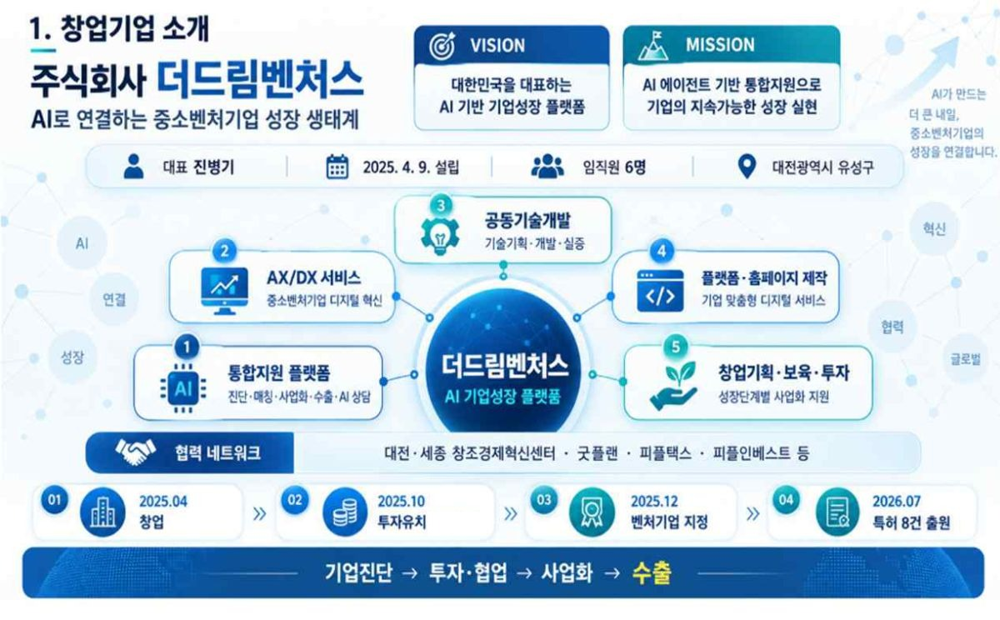
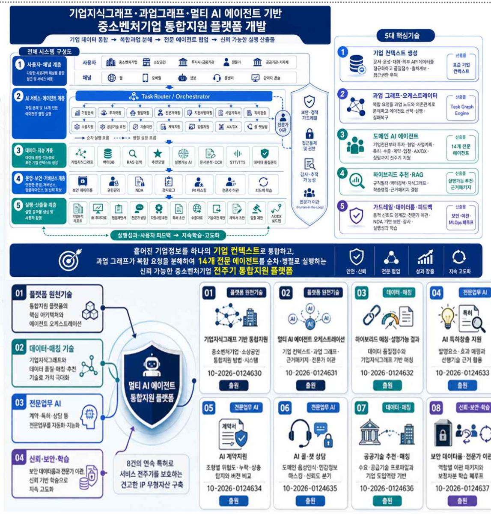
원자료 p.33
04
㈜한푸드테크
Case
㈜한푸드테크_대표 김정연
40피트 컨테이너를 적용한 AI-IoT 기반 정밀 빙온숙성 육류 제조 시스템 개발
40피트 컨테이너형 정밀 빙온숙성 육류 제조 시스템 구조도 (구역: 에어락 전실 / 입고/전처리 구역 / 정밀 빙온숙성실 / 기계실 / 전장/제어실; 치수 12,192 mm (40ft), 높이 2,591 mm)
구성요소 목록
- 1 공기순환팬
- 2 냉각장치
- 3 가습장치
- 4 제습장치
- 5 UV-C 살균장치
- 6 온도센서(상단)
- 7 온도센서(중단)
- 8 온도센서(하단)
- 9 습도센서(상단)
- 10 습도센서(중단)
- 11 습도센서(하단)
- 12 원육 트레이/행거
- 13 중량센서
- 14 NIR 초분광 카메라
- 15 RGB 카메라
- 16 도어
- 17 단열패널(PU/PIR)
- 18 PLC 제어기
- 19 산업용 PC
- 20 IoT 게이트웨이
- 21 전원 분배/차단기
시스템 사양
- 컨테이너 규격
- 40ft ISO High Cube / 외부: 12,192(L)×2,438(W)×2,591(H) mm / 내부: 12,032(L)×2,352(W)×2,393(H) mm / 적재 중량: ~26,700 kg
- 온도 범위
- -1.0 ~ 2.0 ℃ (정밀 제어 ±0.3 ℃) / 단계별 프로그램 숙성 (사용자 설정) / 권장 빙온 범위 -0.5 ~ 1.5 ℃
- 상대습도 범위
- 75 ~ 90 %RH (정밀 제어 ± 3 %RH) / 자동 가습/제습 제어 / 결로 방지 제어 포함
- 기류 특성
- 순환 방식: 강제 순환 / 풍속: 0.2 ~ 0.6 m/s / 층류 유도 설계로 온도 편차 최소화 / 사각지대 최소화 (CFD 기반 설계)
- 위생/안전
- UV-C 살균(연속 운전) / HACCP 대응 설계 / 스테인리스 내장재(304) / 방수·방진 등급 (전기실 IPS4 이상) / 비상 정지 및 알람 연동
- 데이터 연동
- AI-IoT 기반 원격 모니터링 / 실시간 데이터 수집/저장 / 클라우드 연동 및 분석 / 대시보드/알람(웹·모바일) / API 연동 지원
개발 개요
40피트 컨테이너 1대 안에서 원육 입고, 전처리, 정밀 빙온숙성, 비파괴 품질분석, AI 예측, PLC 자동제어, IoT 원격관리까지 가능한 컨테이너형 스마트 육류 제조 플랫폼을 개발하는 것으로 개발 완료 시 기존 숙성고 대비 품질 편차, 중량손실, 작업자 경험 의존도, 출고판정 오류를 줄이고, 데이터 기반 숙성 레시피를 축적 가능
주요연혁
- 2026.01.26 법인설립 및 사업자 등록
- 2026.03월 직무발명보상제 실시
- 2026. 04 특허 기술이전 3건 -"소고기 숙성 방법(제10-2577633호)"," 돼지고기 숙성 방법(제 10-2577642호), “화구의 열을 차단하는 테이블 링(제10-2769795호)”
- 2026.04 특허 2건출원 "AI-IoT 연동형 정밀 육류 빙온숙성 스마트 제조 시스템 및 이를 이용한 품질 예측 기반 제어 방법(10-2026-0053423), “AIoT 기반 실시간 육류 상태 분석을 통한 자동 삼겹살 조리 로봇 및 그 제어 방법(10-2026-0053424)”
- 업무협약 (2026.5월) : ㈜지피에프씨, 지피에프씨베트남, 지피에프씨태국, 와이비에프, 우성프드텍, 해인글로벌 등
- 2026.06 투자유치(아이빌트)
- 2026.06 특허출원4건” NIR·RGB·환경센서 융합 기반 육류 숙성상태 비파괴 판정방법 및 이를 수행하는 시스템(10-2026-0118468)”, “AI 예측 결과 기반 빙온숙성 컨테이너 자동제어 방법 및 이를 수행하는 시스템(10-2026-0118469 )”, “Lot ID 기반 숙성 레시피 생성 및 품질 이력 관리 시스템, 그 방법 및 컴퓨터 판독 가능 기록 매체(10-2026-0118470), “40피트 컨테이너를 적용한 AI-IoT 기반 정밀 빙온숙성 육류 제조 시스템 및 그 제어방법(10-2026-0118471)”
- 2026.07~8월 벤처기업지정, 내일채움공제
6대 개발 핵심기술
- 1. 40피트 컨테이너 내부 구조 설계 및 구축
- 2. 정밀 빙온·습도·기류 제어 기술
- 3. NIR·RGB 비파괴 품질분석 기술
- 4. 통합 DB 및 AI 품질예측 기술
- 5. PLC 자동제어 피드백 루프 기술
- 6. IoT 원격관리 기술
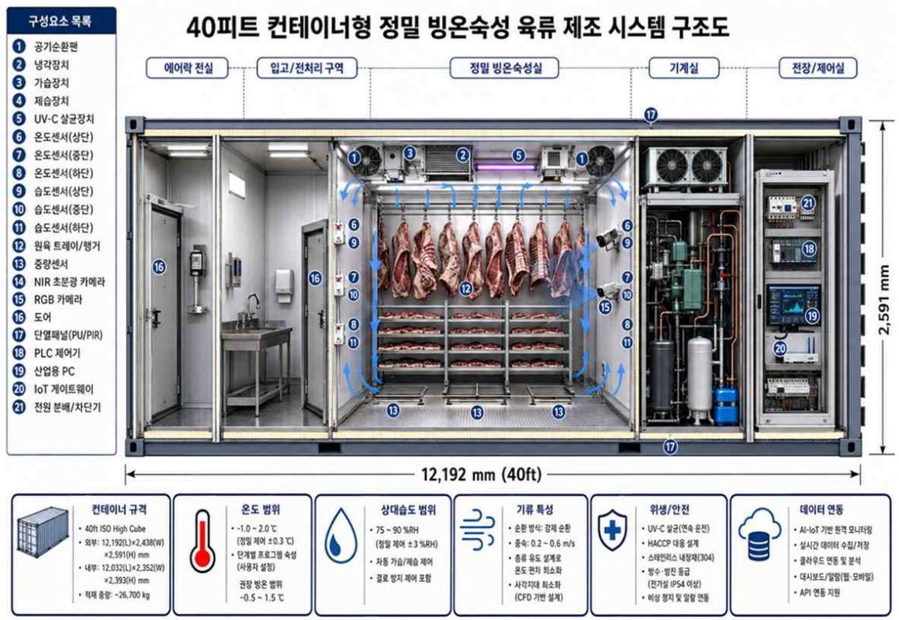
원자료 p.34
05
㈜퓨처파워텍
Case
AI 기반 소독부산물 저감형 자율 최적 전해·냉각 차아염소산나트륨 발생시스템
실시간 데이터와 AI 분석으로 전해·냉각을 자율 최적화하여 고품질 NaOCl을 안정적으로 생산하고 소독부산물을 최소화하는 스마트 솔루션 / 고품질 생산 · 소독부산물 저감 · 에너지 절감 · 안정성 향상
수처리시설 / 소규모 정수장
- 원수 유입(원수) — 정수 공정에서 생성된 원수, 안정적·연속적 공급
- 염수(브라인) 제조(염수탱크 NaCl) — 고순도 소금 수용액, 자동 농도 제어
현장형 차아염소산나트륨 발생 스키드 (On-site NaOCl Generation Skid)
- 1 AI 자율 전해운전 최적화 — 실시간 데이터 기반 최적 전류/전압 제어, 에너지 효율 향상 및 생산성 극대화, 변화하는 원수 특성에 자율 대응
- 2 클로레이트·브로메이트 예측 및 억제 — ClO₃⁻, BrO₃⁻ 농도 실시간 예측, 운전조건 자동 보정으로 생성 억제, 소독부산물 최소화 및 안전성 확보
- 3 AI 열지도 기반 스마트 직접냉각 — 전해조 열지도 실시간 생성, 존(Zone)별 냉각 유량 자동 제어, 국부 과열 방지 및 효율 최적화
- 4 전극 스케일·열화 예지보전 — 스케일·열화 상태 실시간 추정, 세정/교체 시점 예측 알림, 돌발 정지 최소화, 수명 연장
- 구성: 원수(브라인) → 전해(생성) NaCl + H₂O → NaOCl → 전해조(Cutaway), 직접냉각 모듈, 냉각수 순환(직접냉각(전해조 밀착), 실시간 온도 제어), 전력·제어반, 차아염소산나트륨 저장탱크(NaOCl) → 차아염소산나트륨(NaOCl) 공급
- AI 통합 제어 && 모니터링 대시보드
- IoT 통신 — LTE/5G, Ethernet, MQTT / OPC UA, 보안 VPN
- 디지털 트윈 (Digital Twin) — 실시간 상태 모니터링, 성능 시뮬레이션, 이상 예측/원인 분석, 최적 운전 추천
사용처 / 소독 공정
- 정수장·배수지 소독 — 배수지 잔류염소 유지, 수돗물 안정성 확보
- 관로 소독 — 관로 내 미생물 제어, 수질 안정성 향상
- 시설/장비 소독 — 여과지, 탱크, 설비 소독, 교차오염 예방
- 비상/고도 소독 — 사고/재해 시 신속 대응, 고도 소독 공정 지원
핵심 효과
- 고품질 NaOCl 안정 생산
- 농도 균일, 불순물 최소화
- 소독부산물(ClO₃⁻, BrO₃⁻) 저감
- 예측·억제로 수질 안전 확보
- 에너지 사용량 절감
- 최적 전해·냉각으로 효율 향상
- 설비 신뢰성 및 수명 향상
- 예지보전으로 다운타임 최소화
- 운영비 절감
- 자동화·예측으로 인력/비용 절감
- 탄소중립 · ESG 기여
- 친환경 운영으로 지속가능성 강화
슬로건
AI와 스마트 제어 기술로 더 깨끗하고, 더 안전한 물을 만듭니다.
주요연혁
- 2026년 05월 법인설립 및 사업자등록
- 직무발명보상제 실시
- 2026년 07월 특허출원 6건
- 10-2026-0125832(”AI 기반 차아염소산나트륨 발생장치의 자율 전해운전 최적화 방법”, 2026.07.08),
- 10-2026-0125834(“클로레이트 및 브로메이트 발생 위험 예측 및 억제 제어 방법”, 2026.07.08),
- 10-2026-0125835(“AI 열지도 기반 구역별 스마트 직접냉각 전해조 구조”, 2026307308),
- 10-2026-0125837(“전극 스케일 및 열화 예지보전 방법 및 시스템”, 2026.07.08),
- 10-2026-0125839(“디지털트윈 기반 차아염소산나트륨 발생장치 성능검증 및 운전보고 시스템”, 2026.07.08),
- 10-2026-0125840(“AI 기반 소독부산물 저감을 위한 전해 및 냉각의 자율 최적화가 가능한 차아염소산나트륨 발생 시스템”, 2026.07.08)
- 2026년 6월, 투자유치(㈜아이빌트)
- 2026.07 벤처기업 지정.
개발시스템
개발시스템은 전해셀 스키드, 냉각 모듈, 제품액 day tank, 정량투입 모듈, 수질센서 패널, 엣지 AI 제어기, 클라우드 관제/리포트 모듈로 구성. AI는 현장 운전 데이터를 이용해 잔류염소 부족 위험, chlorate 생성 위험, 에너지비, 전극 열화 상태를 동시에 추정하고, 전류밀도·염수 유량·냉각량·투입량 자동 조정 가능한 AI 기반 소독부산물 저감형 자율 최적 전해·냉각 차아염소산나트륨 발생시스템
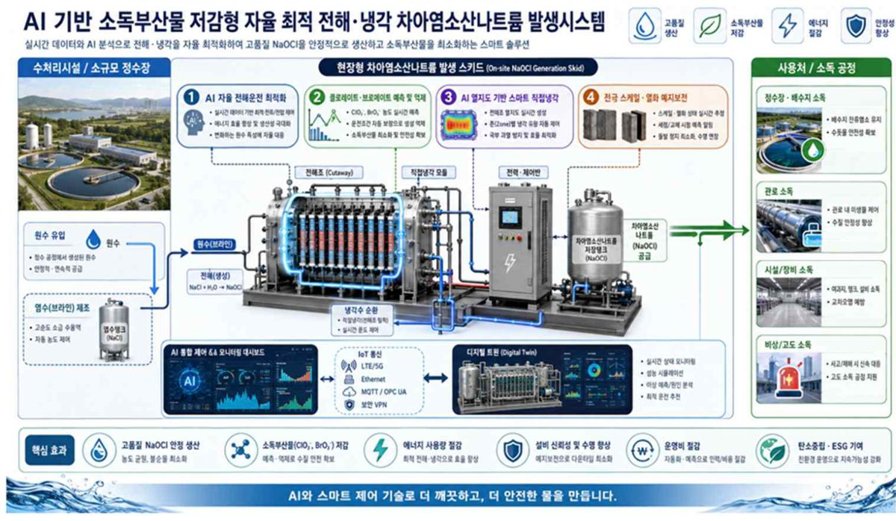
원자료 p.35
06
㈜우리지에이
Case
㈜우리지에이_대표 정상기
소개
㈜우리지에이는 제조업 부품업계와 함께하는 기업으로, 2020년 11월 회사창립 이후로 끊임없이 고객만족을 목표로 각 분야별로 최선을 다해 달려왔습니다.
[최고의 품질], [최고의 서비스], [맞춤형 가공납품]이라는 경영 이념 아래 ㈜우리지에이는 기술혁신을 위해 최선을 다하고 있습니다.
다양한 제품 가공 및 납품에 최선을 다하고 있으며, 현재에 안주하지 않고 진보된 기술력으로 고객을 만족시키기 위해 노력하고 있습니다.
기업 개요
- 회사명
- ㈜우리지에이
- 설립일
- 2020년 11월 12일
- 대표이사
- 정상기
- 주요 사업 분야
- 정밀 부품 가공
- 임직원 수
- 15명
사업분야
- 반도체 장비 부품
- 2차 전지 장비 부품
- 자동화 장비 부품
- 산업기계 장비 부품
- 의료기기 장비 부품
- → 정밀 부품 가공 전문업체 (소형/중형)
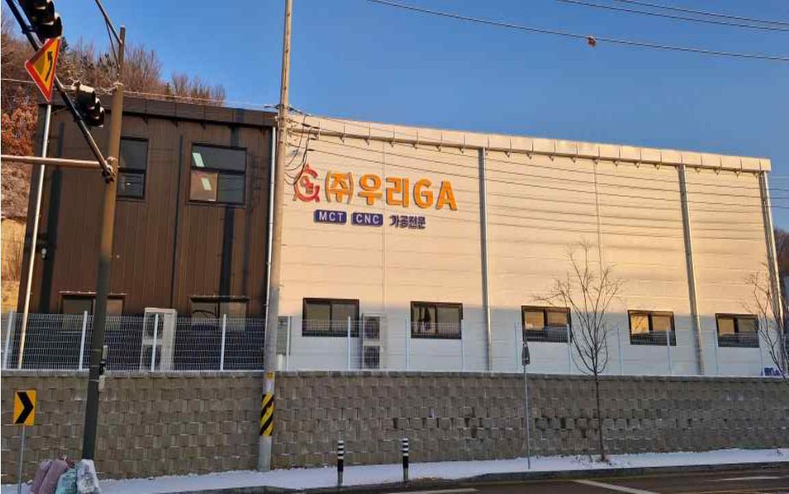
원자료 p.36
07
(주)블루커뮤니케이션
Case
㈜블루커뮤니케이션_대표 정희용
기업 개요
- 기업체명
- (주)블루커뮤니케이션
- 영문기업명
- bluecommunication
- 대표자명
- 정희용
- 종업원수
- 163명
- 설립형태
- 신규설립(개업)
- 설립일자
- 2013-11-13
- 기업형태
- 일반법인
- 기업규모
- 소기업
- 홈페이지
- www.bluecom.kr
- 업종(10차)
- (J58222)응용 소프트웨어 개발 및 공급업
혁신기업 국가대표 1000 선정
전자신문 기사 — 블루커뮤니케이션, 혁신기업 국가대표 1000 선정
조직도
- 대표이사 정희용
- 외부 자문단: SW개발 전문가 / 문화콘텐츠 투자 전문가 / 교육·마케팅·언론홍보
- 협력 파트너: 벤처스퀘어 / 엣스퀘어 / PTX GROUP
- R&D (이사): 교구 개발, 콘텐츠 디자인, 커리큘럼 개발
- 마케팅 (팀장): 해외 마케팅, 국내 마케팅
- 콘텐츠 개발 (이사): 콘텐츠 기획, 콘텐츠 제작, 교재 개발
- 사업관리 (실장): 사업 관리, 생산 관리
- 교육사업 (팀장): 교육 운영, 강사 관리
- 행정관리 (과장): 경영지원, 세무관리
창의 나눔 사업을 통해 지역 확대 중
창의 나눔 사업을 통해 지역 확대 중 (전국 거점 지도, 단체 사진, 교육 현장 사진)
단계별 교육 교구 및 커리큘럼 구성
- 1
2족 보행 로봇 : AsomeBot
대상 초등학생
특징: 로보틱스와 소프트웨어 코딩 학습 / 인터넷 데이터를 이용한 코딩 / 로봇 응용 동작 개발 및 SW코딩 예제 48개 커리큘럼 보유
- 2
자율주행 자동차 : AsomeCar
대상 초등학생 / 중학생
특징: 자율주행 프로그래밍 / 미로 탈출 AI 개발 / 차량 간 통신 프로그램 개발 / 15개 커리큘럼 보유 / (추가 커리큘럼 개발 중)
- 3
사물인터넷 키트 : AsomeKit
대상 중학생 ~ 일반인
특징: 사물인터넷 장치 개발 / LED / 센서 / 각종 부품 제어 / 주요 부품 구조 및 SW원리 이해 / 30개의 예제 위주 커리큘럼 보유 / 기본 예제들을 조합한 새로운 장치 개발 가능 / 다양한 해커톤 및 메이커톤 활용
통합 교육 프로그램 + 60가지 예제 중심 커리큘럼 + 동영상 강의 + LMS 시스템 구축 완료
4개 과정 총 60차시 커리큘럼 (입문과정 / 입문심화 / 활용과정 / 활용심화)
교재 + 동영상 강의 + 코딩실습
· 과학과 연계된 기초지식 학습 · 각종 부품의 구조와 원리 소개 · 아이디어 도출 및 단계학습 → 창의력 향상
· 블록 코딩을 통한 알고리즘 이해 · 파이썬을 기반으로 한 텍스트 코딩 및 수정
직관적인 블록으로 쉽게! 블록코딩을 통해 알고리즘을 이해하고, → 코드를 수정한 후 움직이며 확인하고, → 공부한 코드를 직접 타이핑해 나만의 움직임을 만들어보세요!
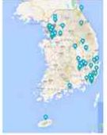
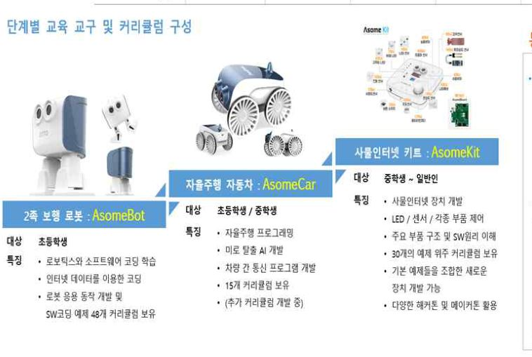
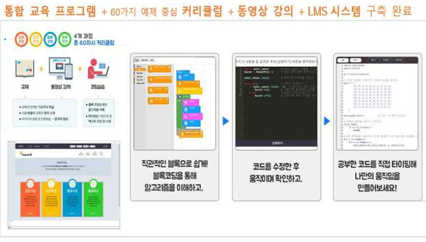
원자료 p.37
08
(주)코코즈
Case
기업 개요
- 기업체명
- (주)코코즈
- 영문기업명
- cocoz Inc.
- 종업원수
- 3명
- 설립형태
- 신규설립(개업)
- 설립일자
- 2017-05-29
- 기업형태
- 일반법인
- 기업규모
- 소상공인
- 홈페이지
- www.cocozinc.com
- 업종(10차)
- (M73202)제품 디자인업
- 주요제품
- 제품디자인/ 피부미용기기/기타가정용전기기기
"디자인+설계+시제품제작+기술사업화 컨설팅"
차별화된 전략적 강점과 융합형 네트워크 보유
㈜코코즈는 제품개발과정 중 가장 중요한 요소인 제품기획부터 기술사업화 전반에 관한 컨설팅이 가능하며, 자사의 네트워크를 기반으로 수요기업 발굴, 기술자문 멘토링, 제품개발 전문화, 정부 및 공공기관 연계 등을 기반한 차별화 전략을 추진하고자 합니다. 디자인과 기술서비스 부문의 융합을 토대로 타 전문기관과의 차별화를 두어 통합적인 전략을 추진하고 단순 디자인 용역에서 벗어나 향후 자체아이템 발굴과 함께 사업의 다각도를 모색하며, 기타 연계지원을 통하여 사업화의 성공을 목적으로 합니다. 또한, 기술사업화와 디자인의 융합을 기준으로 기존 가지고 있는 사업화 네트워크의 역량과 정부지원사업의 정확한 정보의 제공과 함께 다양한 방식의 사업화 Win-Win전략을 제공합니다.
강점
15년차 이상 전문경력
다양한 개발경험과 전문가의 노하우를 토대로 기술개발 서비스의 밀착 코칭과 함께 성공적 사업방향 제시(디자인, 설계, 시제품제작 등)
각종장비의 활용 능력 보유
고성능 3D프린터, 레이저컷팅기, 광학식 정밀 스캐너 등
성능인증(EPC)
전임 중소기업청 성능인증 담당자로서 각종 신기술 개발제품 관련 인증관련 세부 컨설팅능력 보유
R&D과제발굴 및 이전
중소기업의 R&D과제의 발굴과 이전으로 효과적인 전문코칭으로 이익창출 방안 제시
융합파트너 발굴
정부기관, 연구원, 분야별전문가, 중소기업 등을 발굴 및 매칭하여 융합파트너로서의 기회 확대 부여
투자유치 컨설팅
VC, 엔젤파트너스, 엑셀러레이팅을 활용한 기업의 투자유치 확보방안 마련
사업 영역
- 디자인 및 기술 용역 서비스
- 디자인융합 자체아이템 사업
- 네트워크 연계사업
- 민·관 디자인 연계사업
다학제적 MAN POWER
- 분야별 최고의 업무능력보유(주요 멤버 현황)
- CEO cocoz / 직무발명 위원회 / 운영 위원회 / 기업부설 연구소
- 기술사업화 (정희용): 비상근이사 [기계설계학], 전) 마이크로소프트 기자, 편집장, 벤처스퀘어 대표이사 / 제품개발 및 S/W설계
- 기술사업화 (진병기): 비상근 이사 [경영학 석사], 전) 중소기업청 주무관, 무주우체국 팀장 / 국가지원사업의 자문 및 컨설턴트 역량을 통한 효율적 디자인 활용 방안 제시 및 융합 파트너 발굴 연계지원
- 디자인 총괄: [기술사, 박사, 공업디자인학], 전)경기중소기업연합회 수석연구원, (주)KMW, (주)엑손텔레콤 등 / 사업총괄 및 디자인 담당
- 디자인 수석 : [제조공학 박사, 산업디자인학], 전)농촌진흥청, 전북대 사업단 등
- 디자인 책임 : [제품디자인 담당 : 석사], 전)한국물가정보원, SDM코스메틱
- 디자인 주임 : [재료 금속학], 제품디자인 담당
- 제품설계 : [기계설계학], 전)사)경기중소기업연합회 총괄 신제품개발실 등 / 제품설계, 장신구축 담당
- 연구소 업무: 제품디자인 / 신기술 개발 / 제품설계, 시제품제작
등록증 및 인증서, 지식재산 보유 현황
- Chapter 03 제안업체현황 및 역량_03 인증현황 | Strength
- 벤처기업 인증서
- 기업부설연구소 등록증
- 과기부 공인 기술사사무소
- 공인 산업디자인전문회사
- 특허청 직무발명 우수기업
- 창업선도대학 선정서
- 중소벤처기업부 장관상
- KC인증
- 인큐베이팅 아이디어확인서
- 상표등록증 (COCOZ)
- 디자인등록증
- 디자인등록증
- 특허증 ×4 (2행)
- 특허증 ×8 (3행)
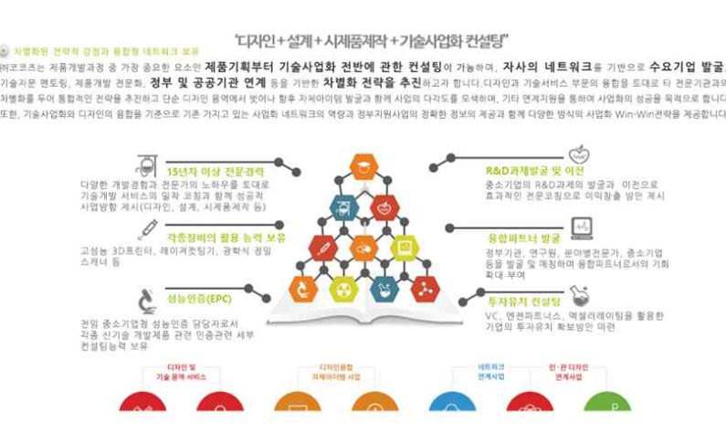
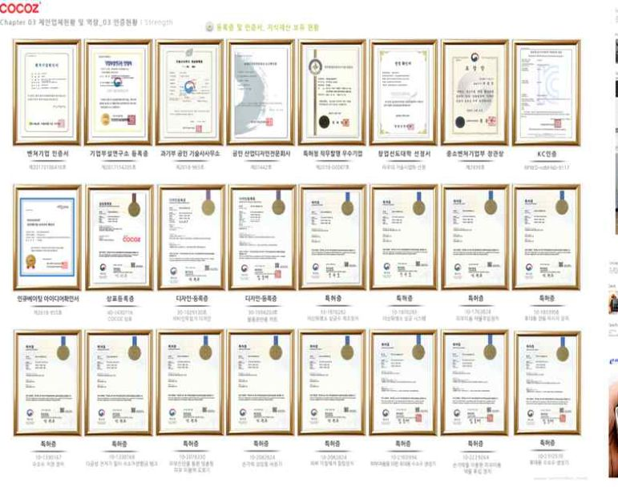
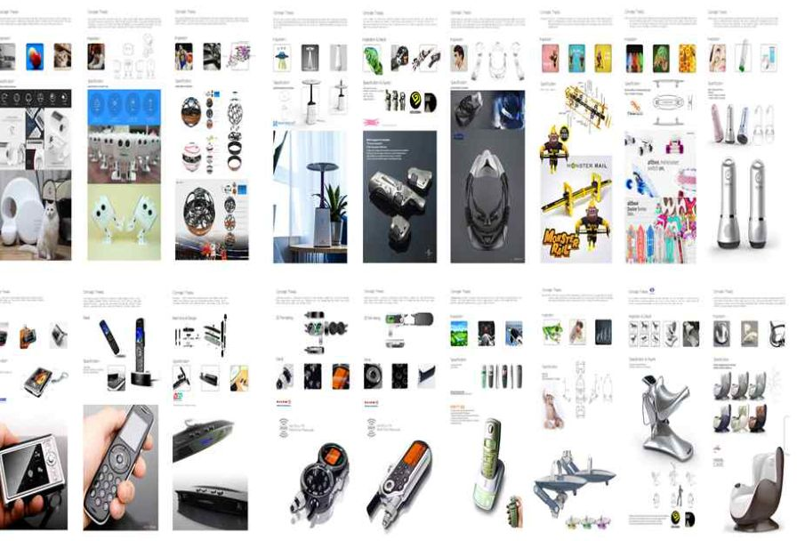
원자료 p.38
09
㈜케이디에스
Case
㈜케이디에스_대표 김춘식
기업 개요
- 기업명
- ㈜케이디에스
- 대표자
- 김 춘 식
- 설립년도
- 2013.11.01
- 임직원
- 30명
- 사업분야
- 철판 가공,판매/구조용 금속제품 제작, 무탄소레이저설비
- 홈페이지
- http://kdscorp.net
최고 품질을 위한 H-Beam가공 / BH 및 강 구조물 제작 시스템 구축
- 공정 Process
- 수주 도면정리: 도면 Nesting / 원재료 최적화
- 가공 절단: 빔 & 엑세사리 가공 절단 / 초정밀 각도 절단
- 용접: 빔 가용접 & 올용접 / 용접 안전성 확보
- 품질 납품: 불량율 Zero / 최고품질 유지 / 적기 납품
- 공정 흐름: 원자재 입고 → 절단 → 취부 → 용접 → 사상 → 곡직 → NC 홀가공 → 출하
비전
“글로벌 무탄소 레이저 설비 시장의 선도 기업으로서 지속 가능한 기술 혁신을 통해 더 나은 미래를 창조한다.“
목표
2028년 종업원 160명 무탄소 레이저 설비 글로벌 강소기업
전략
- 기술혁신과 품질향상
- 글로벌 역량 강화를 통한 해외 시장진출
- 스마트팩토리 등 사업다각화
- 조직역량 강화 및 상장준비
- 지속가능 및 친환경 경영
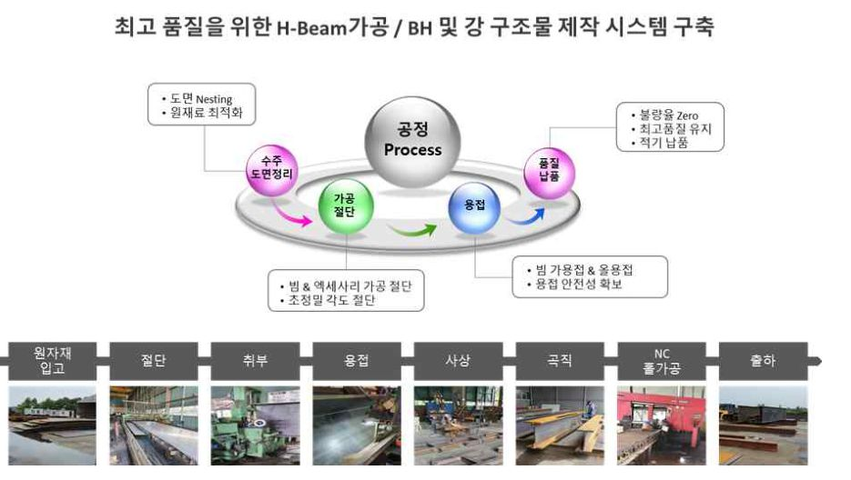
원자료 p.39
10
비젼넥스텝㈜
Case
비젼넥스텝㈜_대표 송주영
기업 개요
- 기업체명
- 비젼넥스텝㈜
- 설립일자
- 2007.07.30
- 대표자명
- 송 주 영
- 임직원
- 12명
- 업종
- 기타전문서비스업(기술경영)
사업영역 (Main Services)
- NBS
New Business Strategy
신사업 아이템 도출 및 사업 평가 / 신사업 아이템 연계 서비스 / 신사업 분야 기술시장 환경 조사 / 신사업 추진전략 기획 및 실행지원 / 사업화 전략 로드맵
- RBS
R&BD Strategy
국가 기술정책 수립 / 공공 기술사업화전략 수립 / 예비타당성 및 R&D 기획 / 성과분석 및 성과평가 체계 수립 / 비전·전략 및 중장기 발전계획 수립
- RAE
Research Analysis Evaluation
기술·시장·특허·정책 분석 / 기술·아이템의 기술성·시장성 평가 / 기업기술가치평가 / 조직 내부자원 조사·분석·평가 / 전략 접합성 평가 및 분석
- TTA
Technology Transfer Accelerating
기술마케팅 및 기술거래 중개 / 기술·기업 기술이전 수요조사 및 분석 / 기술이전설명회·기술거래 상담 / 기술금융 연계 지원 / 기술창업 지원
조직도
- CEO
- 이사회
- 사업전략본부 > 사업전략팀: 신사업기획, 투자연계 및 매칭, 기술정책연구
- 사업전략본부 > 시장전략팀: 시장분석, 기술/특허분석, 사업화전략기획
- 혁신전략본부 > 기업전략팀: 기업성장전략, 기술이전마케팅, 기술사업화전략
- 혁신전략본부 > 혁신전략팀: 산업전략연구, 국가혁신전략, 지역혁신전략
- 창업기획본부 > 창업기획팀: 창업자선발/보육, 창업투자/지원, 투자조합결성/집행
- 경영지원팀 (CEO 직속): 재무회계관리, 경영지원/총괄관리
주요고객
- 기업 — 애로해결/전략컨설팅 — 약 450개사
- 관리기관 — 사업기획/타당성분석 — 약 100개
- 협회/금융 — 투자결정지원/투자연계 — 약 50개
- 대학 — 기술발굴/특화사업 — 약 50개
- 연구소 — R&D기획/기술이전 — 약 35개
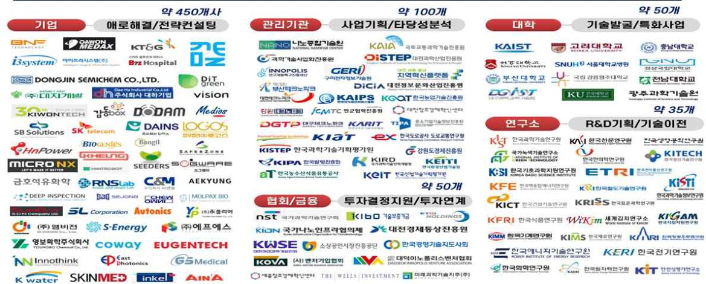
원자료 p.40
11
㈜정우티앤씨
Case
기업 개요
- 기업체명
- 주식회사 정우티앤씨
- 설립일자
- 2016년 10월 05일
- 기업인증현황
- 벤처기업
- 업종(10차)
- 수동식 식품 가공기기 및 금속 주방용기 제조업
사업영역
스포츠 장비 제품
골프 시스템 / 회수기 / 티업기 / 스윙 플레이트 / 캘리브레이션 지그 / 티볼기 (야구) / 기타 기계 장비 제작
마이크로니들
마이크로니들 롤러 / 용해성 마이크로니들을 이용한 바이오 화장품 / 마이크로니들 의료기기
투자 · 기술사업화 기술용역
기계 설계 및 개발 / 투자 / 기술사업화 / 개인투자조합 구성운영
지식재산권 보유현황
| 구분 | 출원인 | 명칭 | 등록(출원)일 | 등록(출원)번호 |
|---|---|---|---|---|
| 특허출원 | ㈜정우티앤씨 | 야구연습장치와 이것을 이용한 야구연습방법 | 2020.11.26 | 10-2020-0161085 |
| 특허등록 | ㈜정우티앤씨 | 피부약물의 공급장치가 구비된 마이크로 니들 롤러 | 2020.11.06. | 10-2178324 |
| 특허등록 | ㈜정우티앤씨 | 마이크로 니들 어레이 제조 방법 | 2020.08.10 | 10-2144831 |
| 디자인등록 | ㈜정우티앤씨 | 피부미용용 마이크로 니들 롤러 | 2019.11.21 | 30-1034122 |
| 상표등록 | ㈜정우티앤씨 | 주비셀 로고 | 2018.10.10 | 40-1405239 |
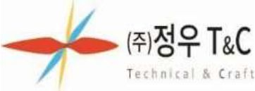
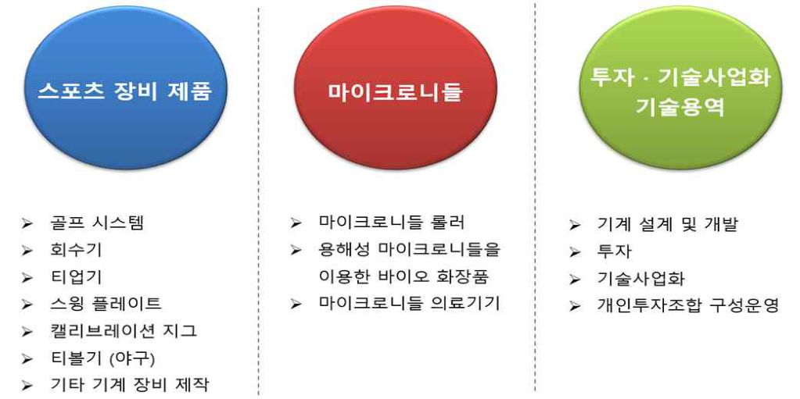
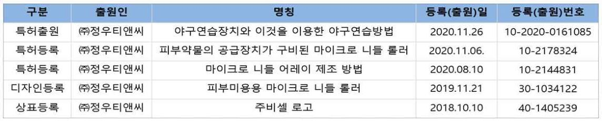
원자료 p.41
12
㈜피케이
Case
기업 개요
- 기업체명
- 주식회사 피케이
- 설립일자
- 2022.03.08
- 홈페이지
- WWW.PKPRO.CO.KR
- 업종(10차)
- 기술서비스업
- 주요제품
- 3D Scanning, Inspection, Reverse Engineering 그 외 제품 및 서비스
대표이사 보유역량
- 학력 : 학사 (한남대학교 기계공학과)
- 경력 : OMA 12년 근무 (어플리케이션 엔지니어(80%), 세일즈(20%) 담당)
- OMA : gom (스캐너 장비 제조회사, 독일) 의 한국 총판 대리점
- 3d 스캐너를 활용한 품질검사, 스캐너 활용 (현대차 외주용역 업무)
- 역설계 (외주 처리)
사업화이력
- 2010년 광주삼성전자 청소기 사업부 3d 스캔 기술지원
- 2010년 현대제철 당진 3d 스캔 기술지원
- 2010년 ~ 2020년 현대자동차 남양연구소 현대기아디자인팀 3d 스캔 기술지원
- 2010년 ~ 2020년 창원LG 1공장, 2공장 DI 측정실 3d 스캔 기술지원
- 2011년 ~ 2020년 한국GM 벤치마킹팀 3d 스캔 기술지원
- 2011년 에디언트코리아 자동차시트사업부 3d 스캔 기술지원
- 2011년 ~ 2020년 수원삼성전자 생산요소기술팀 3d 스캔 기술지원
- 2011년 한국타이어 금산공장 3d 스캔 기술지원
- 2011년 삼성테크윈 무인자동차 개발팀 3d 스캔 기술지원
- 2011년 ~ 2020년 SL 진량공장 품질팀 3d 스캔 기술지원
- 2011년 현대 하이스코(당진) 3d 스캔 기술지원
- 2012년 현대모비스 (용인) 3d 스캔 기술지원
- 2012년 위스코(창원) 3d 스캔 기술지원
- 2012년 대림기업 3d 스캔 기술지원
- 2012년 신영 품질팀 3d 스캔 기술지원
- 2012년 플라스틱옴니엄 시험팀 3d 스캔 기술지원
- 2012년 두산인프라코어 3d 스캔 기술지원
- 2012년 현대자동차 남양연구소 차량분석팀 3d 스캔 기술지원
- 2013년 LG전자 평택 기술연구소 3d 스캔 기술지원
- 2013년 포스코 (인천송도) 3d 스캔 기술지원
- 2013년 구미삼성 무선사업부 3d 스캔 기술지원
- 2013년 현대모비스 김천 램프공장 품질팀 3d 스캔 기술지원
- 2013년 화신 (울산) 3d 스캔 기술지원
- 2013년 현대자동차 남양연구소 파이롯트팀 장비 인스톨 및 교육
- 2013년 수원삼성전자 스캔박스5120 설치 및 기술지원
- 2013년 현대자동차 남양연구소 파이롯트팀 폰토스 기술지원
- 2013년 삼성전기 세종사업장 3d 스캔 기술지원
- 2013년 일지테크 품질팀 3d 스캔 기술지원
- 2014년 평화산업 3d 스캔 기술지원
- 2014년 수원삼성전자 네트워크 사업부 3d 스캔 기술지원
- 2014년 한국GM 디자인팀 3d 스캔 기술지원
- 2015년 경북대학교 산학협력단 3d 융합센터 스캔박스 6130 기술지원
- 2015년 두원중공업 3d 스캔 기술지원
- 2015년 LG 화학 3d 스캔 기술지원
- 2016년 수원삼성전자 세탁기사업부 3d 스캔 기술지원
- 2016년 한국GM 스캔박스 6130 인스톨
- 2016년 현대자동차 남양연구소 환경내구시험팀 3d 스캔 기술지원
- 2016년 ~ 2020년 현대자동차 남양연구소 파이롯트품질생산성개발팀 스캔박스 8360 기술지원
- 2017년 니프코코리아 품질팀 3d 스캔 기술지원
- 2017년 칼소닉칸세이코리아 품질팀 3d 스캔 기술지원
- 2018년 현대자동차 남양연구소 파워트레인 3d 스캔 기술지원
- 2018년 태원금속 품질팀 3d 스캔 기술지원
- 2019년 고이테크 ARGUS 기술지원
- 2019년 A2mac1 3d 스캔 기술지원
- 2020년 서연탑메탈 3d 스캔 기술지원
- 2021년 현대자동차 남양연구소 파이롯트 품질검증팀 CE 차체 품질검사 외주용역 수행
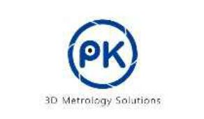
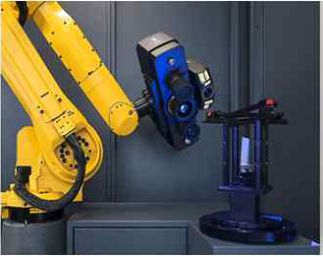
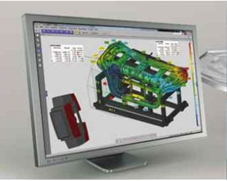
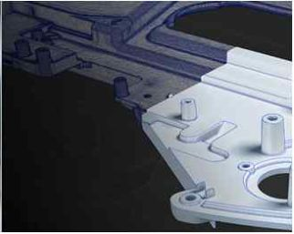
원자료 p.42
13
㈜시정
Case
기업 개요
- 기업체명
- ㈜시정
- 설립일자
- ‘16. 10. 27
- 업종(10차)
- 기타 측정, 시험, 항해, 제어 및 정밀기기 제조업
- 주요제품
- 인공지능 시정계, 응용 SW
사업분야
A.I. VISION 기술을 이용한 지능형 영상 분석 사업
사업분야 세부
- 1
A.I. 시정계
JS-02P / JS-06 / JS-08 / JS-cloud
진출 가능 산업 : 기상 산업, 도로 교통 산업, 항공 산업, 해운 산업, UAM 산업
- 2
A.I. 비식별화
DIS-Service / DIS-Cloud / DIS-System
진출 가능 산업 : 영상 편집기 산업, 보안 산업,지능형 CCTV 설치 산업
- 3
A.I. Vision 솔루션 개발
가변형 차량 속도 감시 장치 / 백연 모니터링 시스템 / 무인 선박용 시정계
진출 가능 산업 : 환경 산업, 무인 선박 및 자동차, 도로 안전 산업
지식재산권
| No | 지식재산권명 | 출원인 | 번호 |
|---|---|---|---|
| 1 | LED광원과 Long Path Open Cell 방식을 적용한 시정계 | ㈜시정 | 등록/10-1874960 |
| 2 | 빔 스플리터를 이용한 시정계 관광 앱 | ㈜시정 | 등록/10-1874965 |
| 3 | 이미지 정보 기반의 시정거리 측정 시스템 및 이를 이용한 시정거리 측정 방법 (PCTKR2018/013289) | ㈜시정 | 등록/10-1874968 |
| 4 | 콘벌루션 신경망을 이용한 영상 처리 시스템 및 이를 이용한 영상 처리 방법 | ㈜시정 | 등록/10-1933866 |
| 5 | 인공지능을 적용하는 시정계 | ㈜시정 | 등록/10-1927227 |
| 6 | 인공지능을 이용한 차량용 영상 시정계 | ㈜시정 | 등록/10-1993447 |
| 7 | 인공지능을 이용한 영상분석 시정계 | ㈜시정 | 등록/10-1993445 |
| 8 | 광학 CCD 카메라를 이용한 멀티-윈도우 구름 검출 시스템 | 한국천문연구원 | 등록/10-1294606 |
| 9 | 일체형 다파장 원격 시정계 | 한국표준과학연구원 | 등록/10-1731884 |
| 10 | 시정 거리 측정을 위한 시뮬레이터 | ㈜시정 | 등록/10-2145411 |
| 11 | 야간 시정계 | ㈜시정 | 등록/10-2095299 |
| 12 | 차량속도 측정이 가능한 시정거리 측정 시스템 | ㈜시정 | 등록/10-2145409 |
| 13 | 인공지능을 이용한 영상분석 시스템 및 이를 이용한 방법 | ㈜시정 | 등록/10-2359306 |
| 14 | 우시정 측정 시스템 및 방법 | ㈜시정 | 출원/10-2019-0113655 |
| 15 | 날씨 제공 방법 및 시스템 | ㈜시정 | 등록/10-2295217 |
| 16 | 인공위성 사진을 이용한 해무 또는 안개 검출 시스템 및 방법 | ㈜시정 | 등록/10-2399960 |
| 17 | 날겜 (상표) | ㈜시정 | 등록/40-1626305 |
수상
| No | 대회명 | 주최자 | 순위 | 날짜 |
|---|---|---|---|---|
| 1 | 기상 빅데이터 분석 인공지능 활용 창업경진대회 | 대전기상청, 대전 창조경제 혁신센터 | 최우수상 | 2019 |
| 2 | 우수 하드웨어 스타트업 경진 대회 | 서울 창업 허브 | 최우수상 | 2019 |
| 3 | 해양·국방기술 스타트업 혁신아이디어 경진 대회 | 대한 민국 해군 | 우수상 | 2019 |
| 4 | 스타트업 스케일업 IR | 창업성장진흥원 | 장려상 | 2020 |
| 5 | 해양•방산기술 혁신아이디어 경진대회 (MADEX 2021) | 한국무역협회, 해군본부 | 우수상 | 2021 |
| 6 | 제 16회 대한민국 기상산업대상 기상산업 진흥 부문 | 기상청 | 환경부장관상 | 2021 |
| 7 | 제23회 중소기업기술혁신대전 | 중소벤처기업부 | 국무총리표창 | 2022 |
인증 · 표창
- 혁신제품 지정 인증서 (조달청)
- 표창장 — ㈜시정 대표이사 — 귀하는 중소기업기술혁신을 통하여 국가 산업 발전에 이바지한 공로가 크므로 이에 표창합니다 — 2022년 10월 20일 — 국무총리 한덕수
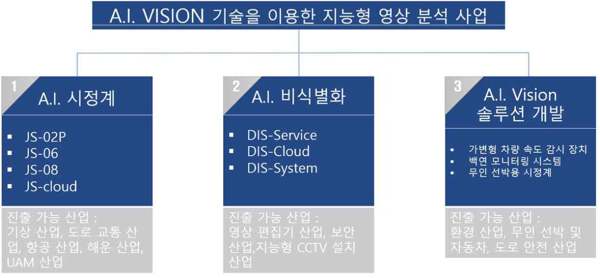
원자료 p.43